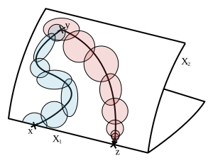

L-Groups of Sheaves on Stratified Spaces
Abstract
In surgery theory, the obstruction to finding a manifold that is h-cobordant to a given Poincaré complex is an element of the quadratic L-group of locally constant sheaves Lqn(Z[π1 X]), specifying when global Poincaré duality on this complex can be lifted to a local duality. In the search for a similar statement for stratified spaces, a logical progression would be to look for the obstruction in an L-group of constructible sheaves.
Motivated by this thought, the goal of this thesis is to define L-groups of several variations of sheaves, built from Verdier self-dual sheaves in the respective class modulo algebraic bordism, and develop fiber sequences involving the corresponding L-spectra that allow for their computation. This is carried out in the piecewise linear and topological setting, on simplicial complexes and regular CW complexes. The results we obtain exhibit a surprising similarity to statements about Browder-Quinn L-groups that arise in stratified surgery theory.
Master Thesis: L-Groups of Sheaves on Stratified Spaces (pdf, 1.443kB)
The following are slides to a contributed talk I gave at the "Conference on Characteristic Classes and Singular Spaces" in Kiel 2023; it contains a short introduction to the main results and constructions, with principal focus to motivate the usefulness of higher sheaf theory as a tool for algebraic topology.
Slides: L-Groups of Sheaves on Stratified Spaces (pdf, 498kB)
